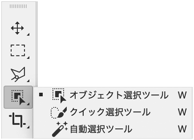
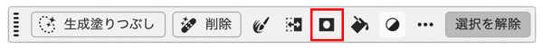
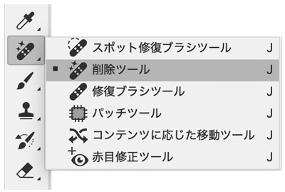
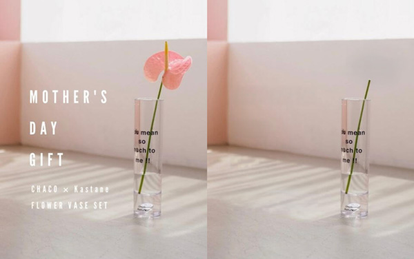

「オブジェクト選択ツール」と「削除ツール」
- プロンプト例
Adobe Photoshopの「オブジェクト選択ツール」と「削除ツール」の使い方
- Adobe Photoshopには、AIを使って簡単に作業できるツールがあります。
- その中でも初心者がよく使うのが 「オブジェクト選択ツール」 と 「削除ツール」 です。
- それぞれ 「選択するツール」 と 「消すツール」 です。
オブジェクト選択ツール（Object Selection Tool）

役割
画像の中の物体を自動で選択するツール
【例】
- 人物
- 商品
- 車
- 建物
- 犬や猫
AIが「これが物体」と判断してくれます。
使い方（基本）
① ツールバーからオブジェクト選択ツールを選択
【ショートカット】
W
② 選択したい物体の周りをドラッグで囲む
③ Photoshopが自動で輪郭を認識して選択
④ 必要なら「選択とマスク」で微調整
レイヤーマスクを追加
- 切り抜きの状態になります。

具体例
人物の切り抜き
- 人物を囲む
- 自動で人物選択
- 「レイヤーマスク作成」
→ 人物だけ切り抜き完成
神ポイント
初心者はこれを覚えるだけでOK- 切り抜き
- 合成
- 背景削除
が簡単にできる
削除ツール（Remove Tool）

design-library.jp
【削除結果】

Nano Banana でイメージを追加
ピンクのカーネーションの一輪挿しに
役割
不要なものを自然に消すツール
【例】
消せるもの
- 電線
- ゴミ
- シミ
- 人
- 電柱
- 写真の汚れ
AIが周囲を解析して、自然に補完します
使い方（基本）
① ツールバーから
- 削除ツールを選択
② 消したいものを
- ブラシでなぞる
③ Photoshopが自動で
- 周囲から補完して消す
【例】
写真から電線を消す
- 削除ツール選択
- 電線をなぞる
- 自動補完
→ 電線が自然に消える
削除ツールの神設定
上部オプションバーサンプリング：すべてのレイヤー
ONにすると
新しいレイヤーで編集できる
（破壊編集を防げる）
初心者向けの使い分け
| ツール | 役割 | 用途 |
|---|---|---|
| オブジェクト選択ツール | 選択 | 切り抜き |
| 削除ツール | 消す | 写真修正 |